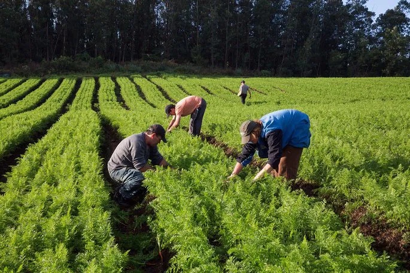
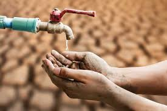

Os oceanos são importantes porque regulam o clima, produzem mais da metade do oxigênio que respiramos, fornecem alimento, medicamentos e recursos para a humanidade, e sustentam uma vasta biodiversidade e ecossistemas como os recifes de coral. Além disso, os oceanos são as principais "super-estradas" do transporte global e exercem papel no desenvolvimento econômico e científico.

A poluição dos oceanos tem um impacto global devastador, afetando a vida marinha através de intoxicação, aprisionamento e morte de animais, além de comprometer a saúde humana pela contaminação da cadeia alimentar. A poluição também causa o branqueamento de corais, a perda de habitats importantes e a diminuição da produção de oxigênio pelos oceanos, impactando o clima e a alimentação. Economicamente, a poluição prejudica setores como pesca e turismo, enquanto economicamente, a poluição dos oceanos afeta a indústria do transporte marítimo e a sustentabilidade da pesca.
Um fato interessante é que os oceanos são responsáveis por produzir mais da metade do oxigênio que respiramos e absorvem uma quantidade significativa do dióxido de carbono (CO2) da atmosfera, desempenhando um papel crucial na regulação do clima global e na mitigação das mudanças climáticas.
No Brasil, afluentes de água doce se juntam em diversos pontos, formando bacias hidrográficas como a do Rio Amazonas (onde se juntam rios como o Negro e Solimões) e a do Rio Uruguai (com a junção dos rios Canoas e Prata). Outros exemplos são o Rio Doce, que nasce da junção do Rio Piranga com o Rio Carmo, e o Rio Paraná, que se forma com a convergência dos rios Grande e Paranaíba.

Se você deseja deixar um feedback, assine o formulário.